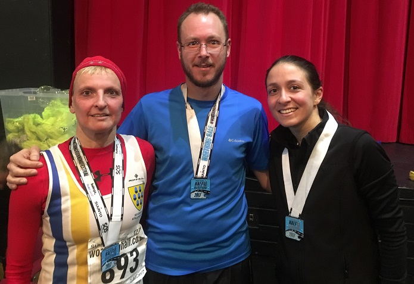

At 7am on a cold Sunday morning Grace Manzotti and Jacqui O’Reilly - pictured left (before) and below right (after) with Tonbridge parkrunner Daniel Ivey - set off to Worthing to race the Worthing Half Marathon, writes Grace.
This race is flat and very well organised. The race headquarters are fabulous on the Worthing Pier inside the Pavillion theatre. It was nice and warm in there and rather chilly and windy outside and it also rained at the start, so weather not great, no sun in sight. We both set off with pacers, Jacqui with the 1h30 pacers and myself with the 1h50 I wanted to go sub 1h50 and Jacqui wanted to go sub 1h30. Jacqui left the pacers quite early on, at about mile 4 and she finished in the very impressive time of 1h28.33 (8th woman/655 WMA:73.8), I stayed with the pacer almost all the way. I was in a fairly large group of people and we literally stuck to the pacer so closely that we kept elbowing each other! But we just laughed about it. I also had a chat with someone who was in Sevenoaks AC few years ago and then moved to Eastbourne. He recognised the vest and started chatting to me.
I wanted to do sub 1h50 so at about mile 11 I left the pacer and sped up and managed a PB of 1h49.44 (21st W45/138 WMA:65.3). I thought well it is only less than a parkrun now. Following the pacer really helped me as he was running a very constant pace and we never slowed down, I think I would have slowed down had I been on my own. Also the pacer was not stopping for drinks and I wanted to drink water so I had to sprint to catch him up again, that was a bit hard. Also because of the constant pace I felt strong enough to speed up for the last 3 miles.

We both found the strong wind on the way back to the sea front quite hard to deal with, at about mile 9 there was a turn back to the sea front and the wind was then blowing against us for the last 4 miles, but at least it had stopped raining. The support on the street of Worthing was very good lots of people cheering us, even if it was cold and windy lots of people came out. We both would recommend this race, it is very well organised and possibly a PB course. The only problem is that it is the week before Tunbridge Wells so we are going to miss one of our local races as we feel we don't want to race a half marathon one week after the other.
The official results are here.